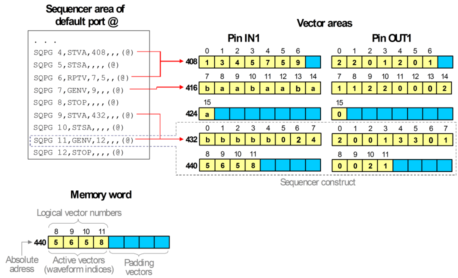

Addressing the vector areas
The memory is organized in words each of which comprises 64 bits. Every sequencer instruction occupies one such word. For the vector areas, the memory words are divided into 8 data units of 8 bits. Every data unit can hold one physical waveform index. Thus, the biggest possible index is 255. The words are accessed from left to right.
Every vector generating instruction is associated with one or more of these memory words. The vector area segment of the whole label equals the sum of these words.
A memory word cannot be divided between two consecutive vector generating instructions, regardless of whether they belong to the same or to different labels. If the length of a vector generating instruction is not a multiple of 8, the right-most data units of its last memory word will contain no user data. The absolute start address for the physical waveform DC/DC power units of the next vector generating instruction will be the next multiple of 8. Furthermore, the absolute start address specified with the STVA instruction must also be a multiple of 8. Examples for this kind of gap are displayed in the figure below.
The following terms are used to describe the relations between vector areas and vector generating instructions.
Sequencer constructs
The combination of a vector generating instruction with its associated vector block sequences in the vector areas of all pins of the label port is called a sequencer construct. For more details see the example below with the associated comments.
Active and inactive vectors
The unused data units at the end of a sequencer construct or of the whole label segment are called padding or inactive vectors. The data units that are interpreted as physical waveform DC/DC power units are called active vectors. Note that the padding vectors are counted when you specify the absolute address of a vector within the vector areas.
Logical vector numbers
Many firmware commands that read from or write to the vector areas must be called with a logical vector number. The logical vector number counts the active vectors of one label, starting from 0.
Example
The following figure displays the relations between the sequencer program and the vector areas of the standard example, and also illustrates the various concepts introduced to describe the structure of these areas:

The left side of the figure shows a section of the sequencer area for the default port @. It contains the sequencer programs for two labels (command line 4 through 8 and line 9 through 12). The right side displays the associated segments of the vector areas for the pins IN1 and OUT1.
Notice the following points in the figure:
- An instance of the sequencer area for @ is contained in the memory of both pin IN1 and pin OUT1.
- Each of the rows on the right side represents one memory word.
- Every cell of a row represents 8 bits. Every active vector contains one physical waveform index (which is displayed in hexadecimal notation).
- The padding (inactive) vectors are left blank in the figure.
- The numbers to the left of the memory words specify the absolute start addresses of the words within the vector areas.
- The numbers above the memory words are the logical vector numbers.
- The first label contains two sequencer constructs:
- The first construct consists of the RPTV instruction and the single words starting at address 408 in the vector areas of both pins. Only the first 7 data cells of this block contain waveform DC/DC power units.
- The second construct consists of the GENV instruction and the two words
starting at addresses 416 and 424. The last 7 cells of the second word contain no user
data.
The second label contains one sequencer construct (framed by a dotted line), which comprises two words.
Functional changes
- Introduced before SmarTest 6.3.2
- SmarTest 7.0.3: Removed MTST firmware command